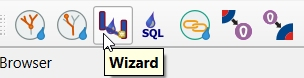

Saisie de données
Elle peut se faire de deux façons:
Saisie de données par construction ou par numérisation dans un projet TWW à l’aide de l’assistant TWW ou des outils QGIS natifs
Saisie de données dans un programme ou un logiciel externe, puis importation des données de position et/ou des données techniques dans TWW, par exemple :
coordonnées des chambres provenant de mesures de terrain
positions et/ou données techniques provenant d’un autre système SIG ou DAO
En utilisant les données de la mensuration (p. ex. « limites de parcelles ») comme base pour définir les limites des bassins versants.
autres
La saisie de données dans TWW nécessite une certaine compréhension du modèle de données sous‑jacent VSA‑DSS, mais elle est facilitée par des assistants et des formulaires performants de collecte de données, qui permettent de relier correctement les différentes tables entre elles. En particulier, la liaison des regards et des tronçons pour constituer un réseau d’assainissement complet est largement automatisée et peut être contrôlée à l’aide de l’outil de suivi du réseau.
L’assistant TWW
L’assistant TWW permet de numériser les regards et les tronçons en quelques clics seulement.
Pour commencer la saisie de données, sélectionnez le bouton TWW Wizard.

En bas à gauche, la fenêtre Saisie de données TWW s’affiche :

Cliquez sur Commencer la saisie de données pour basculer en mode d’édition.
Choisissez Wastewater Structure ou Reach. Commencez l’ajout d’une nouvelle entité dans vw_tww_wastewater_structure ou vw_tww_reach.
Il n’est pas nécessaire de sélectionner la couche appropriée dans la fenêtre des couches, ni d’activer le mode édition ou de choisir l’outil d’ajout d’entité.
Lors de l’ajout d’une nouvelle structure de wastewater, l’assistant ne propose pas de fonctionnalité supplémentaire. Dans la configuration du formulaire de la couche, l’option Reuse last entered value définit, pour chaque champ, si la dernière valeur saisie doit être réutilisée ou non.
When adding new reach, the wizard has some additional functionality:
La fonction accrochage « snapping » sur les nœuds d’eaux usées et sur les tronçons de réseaux reste activée, même si dans l’interface QGIS « Activer la capture » est désactivée.
Privilégier l’accrochage aux noeuds à l’accrochage aux conduites.
Lorsque le nouveau tronçon s’accroche « snap », les obj_id_links sont automatiquement renseignés dans les champs fk_ des points du tronçon.
The Reuse last entered value - option of QGIS does not work in this view. But the standard-fields on the general-tab (and only those fields) do reuse the last entered value.
If you use another tool (e.g. the Identify Features tool) and then want to continue digitizing with the wizard, you can not select the wizard again. You have to click Stop Data Entry and then Start Data Entry and you can continue.
Si vous passez de la numérisation des structures de wastewater à la numérisation des tronçons, il est également recommandé d’arrêter puis de redémarrer la saisie de données. Cela permet d’enregistrer les nouveaux regards et d’assurer que les tronçons puissent s’accrocher correctement aux regards nouvellement numérisés.
Note
Lors de la numérisation, il est préférable de commencer avec les éléments points (structures d’assainissement telles que regards, structures spéciales). Il sera ensuite aisé de connecter ces éléments points avec des éléments linéaires (conduites avec tronçons).
Il est possible d’utiliser les outils de Numérisation avancée avec l’assistant de saisie.
Outils standards de QGIS
Pour numériser dans d’autres couches que vw_tww_wastewater_structure ou vw_tww_reach, utilisez les outils standards de QGIS :
Sélectionner la couche à éditer
Activer l’édition si nécessaire
Activer l’accrochage si nécessaire
Choisir l’outil ajout d’entité
Il est également possible d’utiliser les outils standards de QGIS avec les deux couches principales vw_tww_wastewater_structure et vw_tww_reach. Toutefois, aucune valeur ne sera renseignée automatiquement dans les champs fk_ des points de tronçon et aucun accrochage préférentiel aux nœuds de wastewater ne sera appliqué.